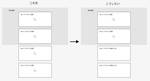

EmotionTechテックブログ
https://tech.emotion-tech.co.jp/
株式会社エモーションテックのProduct Teamのメンバーが、日々の取り組みや技術的なことを発信していくブログです。
フィード
googletest-rust クレートを使ってみた
EmotionTechテックブログ
はじめに こんにちは、バックエンドエンジニアのおおたわらです。 アドベントカレンダー 2 日目でテストコードの振り返りという記事も公開されましたが、弊社では単体テストをしっかりと書きながらプロダクト開発を進めています。 そんな中でテストをもっと書きやすくしたい！という思いから、Rust の googletest-rust クレートをプロダクト開発で使ってみたので、所感を紹介します。 この記事はエモーションテック Advent Calendar 2024の11日目の記事です。 googletest-rust とは もともと Google 社が C++ 向けのテストライブラリ GoogleTest…
1日前
GitHub Actions のワークフローを少し安全に書くコツ
EmotionTechテックブログ
はじめに こんにちは。バックエンドエンジニアのよしかわです。本記事では GitHub Actions のワークフローを少し安全に書くコツを一つご紹介いたします。 この記事はエモーションテック Advent Calendar 2024の10日目の記事です。 脆弱性を含むワークフローの例 今回取り上げるのはスクリプトインジェクション対策です。例として公式ドキュメントで脆弱性を含むとして挙げられているコードを見てみます。これはプルリクエストのタイトルが octocat で始まっていれば「PR title starts with 'octocat'」を出力して成功し、そうでなければ「PR title …
2日前
おいしいCookieを焼きたい
EmotionTechテックブログ
こんにちは！バックエンドエンジニアの谷口（@ravineport）です。 この記事はエモーションテック Advent Calendar 2024の9日目の記事です。 一度言ってみたかったんですこのタイトル。WebのCookieの話です。食べ物のクッキーについてはかつてクッキーのレシピで作ったつもりが蒸しパンのようなものになったくらいには焼くのが苦手ですが、WebのCookieも焼くのが苦手です。よくないですね。 そんな折、お仕事でWebのCookieについて意識する機会がありソフトウェアエンジニアとして生計を立てる以上、せめてWebのCookieについては一定ちゃんと知っておこうということで調…
2日前
Rust から Google Cloud の API を呼び出す
EmotionTechテックブログ
はじめに こんにちは、バックエンドエンジニアのおおたわらです。 何度かこのブログでも紹介しましたが、新サービスの開発ではマイクロサービスの言語の 1 つとして Rust を採用しており、クラウドサービスは Google Cloud をメインに使っています。 現状、Google Cloud の 公式 Rust クライアントライブラリはありません*1。そのため、サードパーティーのクレートを使って開発していますが、使いたいサービスに対応したものがなかったり期待した作りではない場合があります。 クレートの内部でやっていることは基本的に Google Cloud API の呼び出しなので、それを自前で実…
4日前

Intersection Observer を利用した遅延読み込み
EmotionTechテックブログ
はじめに こんにちは、フロントエンドエンジニアの有馬です。今回は Angular で Web API である Intersection Observer を利用して、 component のデータを遅延読み込みする方法をお伝えします。 この記事はエモーションテック Advent Calendar 2024の7日目の記事です。 課題 現在開発中の機能には、アンケートの回答を質問ごとに集計し、質問の種類に応じてグラフや表で表示する画面があります。 現状ではこの画面を開いたときに、全ての質問に対して個別に集計リクエストが送られています。質問数が10問くらいであれば問題になりませんが、アンケートによっ…
5日前
未経験からプロダクト開発してみた
EmotionTechテックブログ
はじめに はじめまして、データアナリストの柳です。 今回は、私が担当しているプロダクト「分析＆レポート資料作成自動化ツール」を開発することになった経緯についてご紹介します。このツールは、手動で数時間かかっていた作業を数分で完了させ、データ分析業務の効率化を目指して開発したものです。 未経験からプロダクト開発に挑戦する中での学びや気づきが、これから挑戦する方だけでなく、すでに開発に関わっている方々の参考になれば幸いです。 背景と課題 当時、エモーションテックでは人手不足が深刻で、分析レポートの需要に供給が追いつかず、受注をお断りせざるを得ない状況が続いていました。このような状況に、目の前のビジネ…
6日前
エモテクは子育て家庭にも働きやすい職場です！ 1
1
EmotionTechテックブログ
はじめに こんにちはテックリードのかどたみです。 私事で申し訳ないですが、昨年末に第一子が誕生し幸福度が爆上がりしています。 私生活が子育てでガラッと変化しましたが、多くの方の配慮によって充実した生活を送ることができています。 今回は、その一因である弊社の働きやすさについて紹介したいと思います。 この記事はエモーションテック Advent Calendar 2024の5日目の記事です。 弊社のここが子育てしやすい！ 男性も育休を取りやすい雰囲気がある 時代として取りやすくなっているのは確かだと思いますが、弊社は取らない事で逆に心配されるような雰囲気があります。コロナ禍になる前からリモートと出社…
7日前
実装予定期間に入ったのに、検討も終わってないよ！ってなったときにやったこと 1
EmotionTechテックブログ
はじめに こんにちはテックリードのかどたみです。 今回は仮説検証期あるある？、検討がうまくいかずスケジュールがおしちゃった話をしようと思います。 我々プロダクトチームはロードマップという形で年間を通した開発スケジュールを社内に公開しています。これによってビジネスサイドとの会話の円滑化を図っています。 もちろん、期初に決めたスケジュールのまま固定されるのではなくお客様の要望や、会社や市場の状況によって見直しはしますが、基本的に我々はロードマップの通りに開発することを念頭に置いています。 そんな中、タイトルの通り今年はいろいろな事情が重なり1つのチームが大幅な遅延に見舞われました。 大変でしたが、…
8日前

Rustのライブラリの探し方
EmotionTechテックブログ
はじめに こんにちは。バックエンドエンジニアのよしかわです。本稿では業務で用いる Rust のライブラリをどのように探しているかやその際に何を気にしているかについてご紹介します。 この記事はエモーションテック Advent Calendar 2024の3日目の記事です。 ライブラリとクレートの関係 まず先に、ライブラリという語と Rust で頻出する「クレート(crate)」という語の関係について述べておきます。といっても大抵の場合ライブラリとクレートは同じものを指すと考えて差し支えありません。詳しくは “the book” と呼ばれるドキュメントの 7.1. Packages and Cra…
9日前
New Relic でフロントエンドのモニタリングダッシュボードを作ってみた
EmotionTechテックブログ
はじめに この記事はNew Relic Advent Calendar 2024の 2 日目の記事です。 こんにちは。株式会社エモーションテックでフロントエンドエンジニアをしているすずきです。 弊社ではアプリケーションの監視に New Relic を使っているのですが、その機能の 1 つにダッシュボードがあります。 New Relic で収集したデータをどのように視覚化・活用すればいいのか、まずはフロントエンドチームで検討してダッシュボードを作ってみました。 作ったものを定期的に見て話し合うという運用を始めてある程度時間が経ったので、今回はそのダッシュボードについてご紹介しようと思います。 ダ…
10日前
テストコードの振り返り
EmotionTechテックブログ
はじめに こんにちはテックリードのかどたみです。 突然ですが、マイクロサービスでの開発を始めてから3年が過ぎ去りました。。。時の流れは早いですね。。。 既存のサービスの運用を行った後、そこにある課題をできる限り再現させないように新たなコードベースを構築してきました。 その中でも個人としてはテストに課題感を持ち以前こんなポエムも書きましたが、ポエムを書いただけで振り返ってこなかったのでここで振り返ってみたいと思います。 この記事はエモーションテック Advent Calendar 2024の2日目の記事です。 効果の実感 しっかりテストを書いてきて良かったことは、やはり仕様の変更時に安心ができる…
10日前
Web エンジニアが使いたいギャル流行語2024
EmotionTechテックブログ
みなさんこんにちは！今年も始まりました エモーションテック Advent Calendar 2024。 1日目は私、Product チームの黄色い切り込み隊長 高橋（@fusho_takahashi）が務めさせていただきます！ 初日の本日は Advent Calendar 恒例の Web エンジニアが使いたいギャル流行語 2024 年版を発表します！ 言わずとしれた日本の宝ギャル雑誌 egg が毎年発表している egg 流行語大賞 。 youtu.be まだチェックしていなかったみなさんもご安心ください！昨年に引き続き、この中から Web エンジニアが使える流行語をピックアップしてご紹介してい…
11日前
大規模調査を支えるアンケートシステムのアーキテクチャ
EmotionTechテックブログ
はじめに こんにちは、バックエンドエンジニアのおおたわらです。 弊社のプロダクトの一部に、顧客企業の行いたい調査（例えば、企業が顧客のニーズを理解し、最適なサービスを提供をするためのユーザー向け調査）に応じてアンケートを作成し、回答を集めることができる「アンケート機能」があります。 この機能はコンシューマ向けの大規模な調査（具体的にはメールやプッシュ通知等で数十万〜数百万人にアンケート回答を依頼するような調査）での利用も想定しており、大量アクセスに対応できることが求められます。更に、集めた回答に対し分析を実施し、すぐに結果を確認できることも求められます。 このためのアーキテクチャを構築したので…
12日前
Terraformのバージョンをv1.3.5からv1.9.5に上げた話
EmotionTechテックブログ
はじめに エモーションテックでSREチームに所属しているsugawaraです。弊社ではインフラ管理にTerraformを利用しており、複数のプロダクトや社内インフラを含めて約90の環境を管理しています。優先度の兼ね合いもあり長い間Terraformのバージョンアップができていなかったのですが、最近v1.3.5からv1.9.5にアップデートしました。この記事では、バージョンアップ作業において苦労した点と、バージョンアップして良かった点について詳しく解説します。 アップデート前の環境 Terraform: v1.3.5 Terragrunt: v0.50.6 stateファイルの保存先: AWS …
20日前
1年間運用したAzure OpenAI Serviceの負荷分散構成の紹介
EmotionTechテックブログ
はじめに こんにちは、 SREのおかざきです。 エモーションテックでは、Azure OpenAI Serviceを活用したテキストAI分析サービス「TopicScan®︎」の開発を進めています。 本記事では、Azure OpenAI Serviceの負荷分散を実現するために設計したアーキテクチャと、その1年間の運用を踏まえての感想をご紹介します。 課題：増え続けるAzure OpenAI Serviceリソースへのアクセス方法 Azure OpenAI Service (以下、Azure OpenAI)には、TPM (Tokens-per-Minute) という利用制限(*1)があり、サブスク…
1ヶ月前
RustでGoogle CloudのService AccountからAWSのRoleを使う
EmotionTechテックブログ
こんにちは！バックエンドエンジニアの谷口(@ravineport)です。 Google Cloud上のアプリケーションからAWS内のサービスにアクセスする必要があり、AWSのAssumeRoleという方法を教えていただいたのでそのご紹介です。今回は例としてS3のオブジェクトにアクセスする方法をご紹介しますが、その他にもGoogle CloudにはないソリューションがAWSにあったり、データ連携等でクラウドサービスをまたぐとき等にも活用できるかと思います。 やりたいことイメージ図 方法はいくつかありますが、今回はAWS Security Token Service (AWS STS)のAssum…
2ヶ月前
埋め込みモデルを利用して2文の類似度を判定する 〜Azure OpenAI・Vertex AIのモデルを比較
EmotionTechテックブログ
エモーションテックで事業開発・データ分析（時々エンジニア）をしているイケガメです。 生成AIの登場によって、テキスト分析の常識は急速に変化しています。 その一方で、自然言語処理における基本的な考え方は、現在も変わっていません。 例えば、テキストの分類や検索において核となる「単語や文章のベクトル化（埋め込み）」は、今後も重要な基盤技術として位置づけられるでしょう。 この技術を利用することで、「2つのテキストの類似度」を判定することが可能になります。 今回は、Azure OpenAIとVertex AIのEmbedding（埋め込み）モデルを利用して、2つの文章の類似度を判定する実験を行いました。…
3ヶ月前
データ大量表示！Angular Material vs AG Grid パフォーマンス比較
EmotionTechテックブログ
はじめに フロントエンドエンジニアの有馬です。 弊社のプロダクトのひとつにアンケートシステムがあります。そこにはアンケートの回答データを閲覧する機能がありますが、多くのユーザーが回答するとこのデータ量が膨大になることがあります。まずは何も対策せずに Angular Material の Table で表示してみることにしましたが、表示に時間がかかりユーザビリティを損ねると判断し、仮想スクロールで対応することを検討し始めました。 しかし、Angular Material の Table だと仮想スクロールを実装するのがかなり大変だったので、別の選択肢を探していたところ AG Grid というライ…
3ヶ月前
テストエビデンスについて
EmotionTechテックブログ
はじめに こんにちは、QAエンジニアのなかじまです。 今回は品質を保証するために必要な証跡である「テストエビデンス」について、お話ししようと思います。 テストエビデンスとは テストエビデンスは「テストの証跡」です。 QAにおけるテストは「実際にプログラムを動かした結果、意図した通りに動作することを確認する」作業です。 「テストの手順」「使用するデータ」「期待値」「テスト結果」「実施環境」といった情報が証跡に該当します。 何故、テストエビデンスを残すのか テストエビデンスを残すことで、品質保証においてどのようなメリットがあるのでしょうか？ テスト状況の可視化 各機能ごとのテストすべき項目数、実施…
3ヶ月前
OpenRestyログ構造化奮闘記
EmotionTechテックブログ
はじめに こんにちは。テックリードのかどたみです。 今回も、構造化ログネタです。弊社ではマイクロサービス開発を複数種類の言語、フレームワークで行っていますが、ある程度統一されたフォーマットのログを出力し、運用の円滑化を図っています。アプリケーションサーバーのログはほぼ対応し切っており、今までもいくつか方法を紹介しています。 FastAPI ActixWeb NestJS 今回紹介するOpenRestyはnginxにluaのモジュールなどをパッケージングしてアプリケーションサーバーやゲートウェイを構築できるOSSです。 我々はゲートウェイとして利用しており、トラフィックもかなりの量ですが、ログの…
5ヶ月前
QAチームのタスク整理
EmotionTechテックブログ
はじめに こんにちは、QAチームのもときです。 私は正社員1人目のQAエンジニアとして2022年12月にエモーションテックに参入し、今月で1年半ほどが経ちました。 QAチームとしてどのようにタスクの対応を進めているかを今回ご紹介させていただきます。 日々のタスク 入社直後は既存製品のテストがQAチームのメインのタスクでした(その当時の様子について記事にしています)。所謂テスターとあまり変わりが無いタスクが多かったです。開発者の実装完了 → テスト実施 という形で、随時テストタスクに対応していました。そのため、QAチームとしてロードマップを制定して、活動するなどはできていませんでした。 その後、…
5ヶ月前
Angular アプリケーションで ChunkLoadError をハンドリングする
EmotionTechテックブログ
こんにちはあるいはこんばんは。フロントエンドエンジニアの id:kasaharu です。 エモーションテックでは Angular を使ってアプリケーション開発をしています。今回は Angular アプリケーションで ChunkLoadError をハンドリングする対応をおこなったので、それについて紹介します。 遅延ロードと ChunkLoadError Single Page Application (SPA) を開発をする際に、アプリケーションの開発が進んでくると初期バンドルのサイズも大きくなっていくため、遅延ロードを検討することがよくある。Angular でもルーティング単位で簡単に遅延ロ…
5ヶ月前
Angular Material を v18 に update してみた
EmotionTechテックブログ
こんにちは！フロントエンドエンジニアの高橋 a.k.a 黄色い人（ @fusho_takahashi ）です。 Angular Material は v18 で大幅なアップデートがありました。ついに Material 3 が stable になったのです 🎉 このアップデートは v15 で MDC-based components が stable になったときのような、Angular Material にとってはかなり重要で大きなアップデートといえます。 今回は v17 の Material 2 ベースのアプリを v18 に ng update すると何が変わるのか。theme の設定を中心…
6ヶ月前
RustのスタックトレースをRuby風に加工する
EmotionTechテックブログ
はじめに こんにちは、バックエンドエンジニアのよしかわです。 今回の題材はRustのスタックトレースの加工です。Google CloudのError Reportingはスタックトレースを利用してエラーのグルーピングなどを行ってくれますが、Rustはその対応言語に入っていません(参考: Error Reporting におけるエラーの報告とグループ化について調べてみた)。そこで窮余の策としてRustのスタックトレースをError Reportingが解析できるフォーマットへ加工できないか試してみました。以下でその内容を簡単にご紹介します。 加工先フォーマットの選定 スタックトレースはRuby風…
6ヶ月前
Async Recursion In Rust
EmotionTechテックブログ
こんにちは、リーです。エモーションテックのバックエンドエンジニアとして働いています。 Rust のasync fn は素直には再帰できないらしいという話を聞いたのでその理由と克服方法について調べてみました。 再帰の例 (fibonacci) まずは、再帰のプログラムで検証してみます。今回、再帰をつかったプログラムの例としてfibonacciを実装してみました。 非 async 版 まずは async を使わずに書いてみます。これはとくに問題ありません。 fn fibonacci(n: u64) -> u64 { if n <= 1 { n } else { fibonacci(n - 1) +…
6ヶ月前
Error Reporting におけるエラーの報告とグループ化について調べてみた
EmotionTechテックブログ
はじめに こんにちは、バックエンドエンジニアのおおたわらです。 過去にもこのブログで紹介したことがありますが、弊社ではマイクロサービス（言語は Rust、Node.js、Python など）の実行基盤として Cloud Run を利用しています。 アプリケーションのエラーについては現在 Cloud Monitoring によるログベースの監視を行っていますが、同原因のエラーがまとめられずエラーの対応状況の管理が困難なため、Error Reporting の利用を検討しています。 Error Reporting はログに出力されたスタックトレースに基づいてエラーをグループ化し、発生回数の集計など…
7ヶ月前
Pythonプロジェクトにおけるディレクトリ構成と現状の課題について
EmotionTechテックブログ
はじめに エモーションテックでSREチームに所属しているsugawaraです。 前回書いたブログでは、Pythonプロジェクトで利用しているツールについてご紹介しましたが、 今回はPythonプロジェクトにおけるディレクトリ構成、コンテナのビルドをどのように行なっているか、また現状課題に思っていることについてご紹介します。 ディレクトリ構成について Poetryを利用していることは前回書いたブログでもご紹介しましたが、 社内の一部Pythonプロジェクトのディレクトリ構成については以下のようなmonorepoになっています。 . ├── .github │ ├── dependabot.yml…
8ヶ月前
Startup Angularのハンズオンに参加した話
EmotionTechテックブログ
こんにちは、フロントエンドエンジニアのねだです。 今回は Startup Angular にオンライン参加し、同イベントの新たな試みとして行われたハンズオンで新たな Angular を体感した話を書いてみたいと思います。 Startup Angular は Angular を採用しているスタートアップによる、Angular 開発の知見などを発信するイベントです。弊社エモーションテックは、前回に引き続きスポンサーとして参加させていただきました。 2 月 16 日に atama plus 株式会社さんのオフィスで開催された第 7 回の Startup Angular では、このイベントでは初めてと…
9ヶ月前
Angular の新しい制御フローにマイグレーションしてみた
EmotionTechテックブログ
はじめに こんにちは。フロントエンドエンジニアのすずきです。 Angular v17 で developer preview として提供された組み込み制御フロー（built-in control flow）皆さんは試してみましたか？ 本記事では、今までの構造ディレクティブ（*ngIf や *ngFor など）から新しい制御構文に書き換えてみようと思います。 さっそく書き換えてみる 組み込み制御フローへのマイグレーションにはコマンドが用意されているので、このコマンドを使っていきます。 ng generate @angular/core:control-flow 実行環境は下記の通りです。 Ang…
10ヶ月前
Cloud Runのコンテナインスタンスはいつまで起動するのか試してみた
EmotionTechテックブログ
はじめに こんにちは、エモーションテック SREのおかざきです。 今回は弊社プロダクトで利用しているGoogle CloudのCloud Runについて、実際に動かしてみた中で生じた疑問点を検証してみました。 疑問点 リクエストタイムアウトを超えた処理はどうなるのか デプロイ時に旧リビジョンで稼働していた処理はどうなるのか リクエストタイムアウトを超えた処理はどうなるのか Cloud Runのドキュメントには以下のように記述されています。 Setting request timeout (services) | Cloud Run Documentation | Google Cloud If…
10ヶ月前